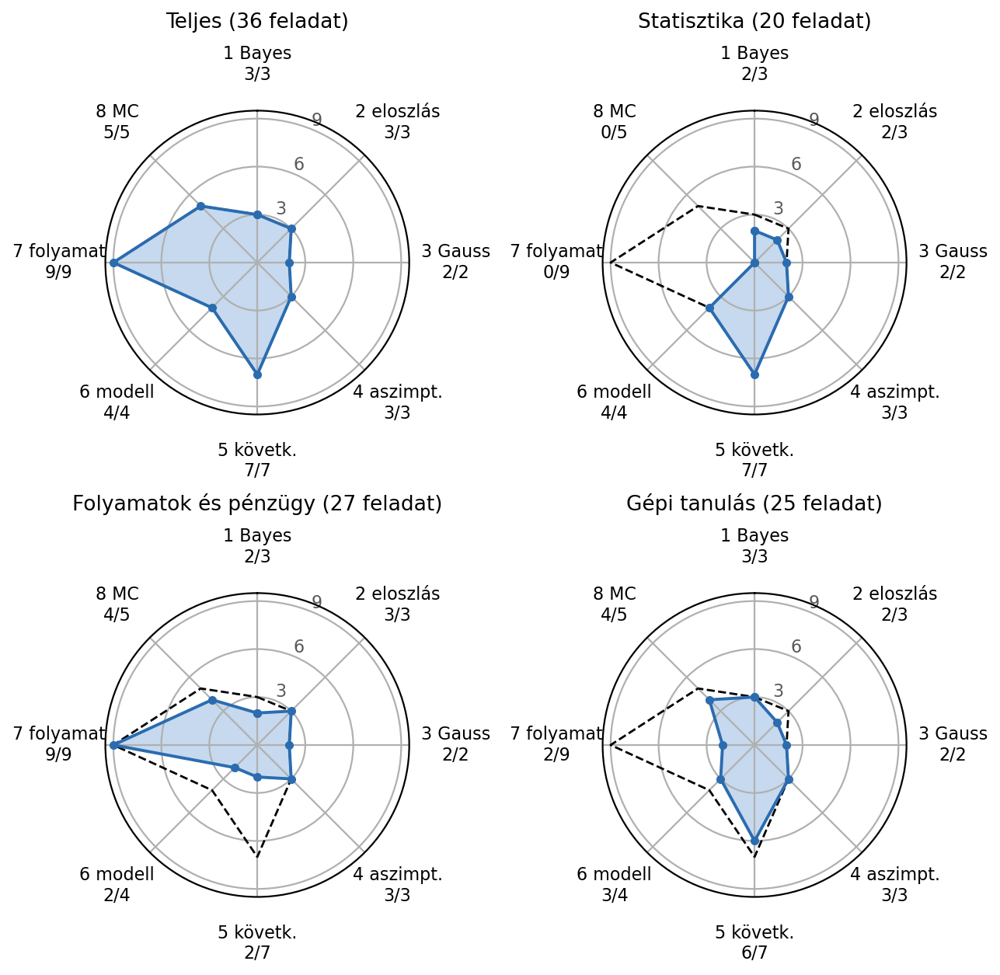

Egy-egy alfejezet feladatainál tudjuk, melyik eszközt kell elővenni. Vizsgán és a munkában ezt nem mondja meg senki: fel kell ismerni, hogy egy kérdés Bayes-tétel, Erlang-formula vagy opcionális megállás. Ez a 36 feladat fejezeteken átívelő keverék. Oldja meg őket segédlet nélkül, papíron (a programozós feladatokat géppel), és csak utána nézze meg a megoldást. Ahol elakad, a feladat melletti hivatkozás megmondja, melyik alfejezetet kell átismételni.
Szintek: A számolós (kb. 6 perc), B modellezős (kb. 15 perc), C bizonyító vagy programozós (kb. 30 perc). A cél a legalább 70% hibátlan megoldás: ez a könyv kilépési feltétele.
A Tanulási útvonalak és belépő teszt négy útvonalát követve az alábbi válogatást ajánljuk. A „kiegészítő” oszlop azokat a feladatokat sorolja fel, amelyek az útvonal kiegészítő olvasmányaira vagy mélyebb ismeretekre támaszkodnak.
| Útvonal | Ajánlott feladatok | Kiegészítő | Darab |
|---|---|---|---|
| Teljes | 1–36 | – | 36 |
| Statisztika | 1–18, 31, 36 | 19, 21, 29, 30 | 20 |
| Folyamatok és pénzügy | 1–9, 13, 15, 16, 19–30, 32, 33, 36 | 17 | 27 |
| Gépi tanulás | 1–19, 21, 28–30, 34, 35 | 25, 26 | 25 |

Az ábra a kompetenciatérkép nyolc kompetenciája szerint számolja a feladatokat: 1 modellezés és Bayes, 2 eloszlások, 3 többdimenziós és Gauss-modellek, 4 aszimptotika, 5 következtetés, 6 modellezés adatból, 7 folyamatok, 8 Monte Carlo és MCMC.
Tíz feladat, 100 pont: három A (6 pont), négy B (10 pont), három C (14 pont). Számológép és a képletgyűjtemény használható; programozni nem kell (a C feladatok programozós részét hagyja el). 70 pont a megfelelés határa.
| Útvonal | A (3×6) | B (4×10) | C (3×14) |
|---|---|---|---|
| Teljes | 1, 16, 19 | 11, 14, 23, 29 | 6, 15, 18 |
| Statisztika | 1, 10, 16 | 8, 11, 14, 17 | 6, 15, 18 |
| Folyamatok és pénzügy | 7, 19, 22 | 20, 23, 26, 32 | 3, 21, 24 |
| Gépi tanulás | 1, 4, 16 | 8, 14, 17, 29 | 6, 15, 18 |
Időbeosztás: 25 perc az A, 80 perc a B, 60 perc a C feladatokra, 15 perc ellenőrzésre.
Kérdés. Egy kaputelefon napi hívásszáma . Mekkora az esélye, hogy 30 nap alatt összesen 135-nél több hívás jön?
Egy jó megoldás négy lépésből áll. (1) Modell és feltevés: a napok függetlenek, ezért az összeg (pontos eredmény, Függetlenség, összegek és többváltozós transzformáció). (2) Módszer: nagy, a normális közelítés folytonossági korrekcióval jó. (3) Számolás: . (4) Ellenőrzés: a pontos Poisson-farok 0,0806; az eltérés a közelítés hibája, nagyságrendileg rendben. A vizsgán a modell és a feltevés ugyanannyit ér, mint a szám.
1. (A) Egy betegség előfordulása 2%, a teszt szenzitivitása 0,95, specificitása 0,90 (szemléltető értékek). Mekkora a betegség esélye egy pozitív, illetve két, feltételesen független pozitív teszt után? (A Bayes-tétel és a diagnosztikai következtetés)
2. (B) A levelek 40%-a spam. Az „ingyen” szó a spamek 30%-ában, a rendes levelek 2%-ában, a „megbeszélés” a spamek 1%-ában, a rendes levelek 10%-ában fordul elő. Egy levélben az első megvan, a második nincs. Naiv Bayes-modellel mennyi a spam esélye, és melyik feltevés a leggyengébb? (Függetlenség, feltételes függetlenség és paradoxonok)
3. (C) golyót véletlenszerűen, függetlenül dobunk urnába. Vezesse le az üres urnák számának várható értékét és varianciáját indikátorokkal; számítsa ki -re. (Várható érték, variancia és az indikátortrükk)
4. (A) a intervallumon. Mennyi , a várható érték és a medián? Adjon inverz CDF-mintavevőt. (Sűrűségfüggvény, eloszlásfüggvény és kvantilis)
5. (B) standard normális peremű, kétdimenziós normális pár, . Mi feltételes eloszlása mellett, és mennyi ? Miért „regresszió az átlaghoz” ez? (Perem- és feltételes normális eloszlás, lineáris Gauss-Bayes-frissítés)
6. (C) függetlenek. Jacobi-transzformációval mutassa meg, hogy egyenletes, , és függetlenek. (Függetlenség, összegek és többváltozós transzformáció)
7. (A) 100 szabályos kockadobás összege mekkora eséllyel nagyobb 380-nál (normális közelítés, folytonossági korrekció)? (A centrális határeloszlás-tétel)
8. (B) 200 látogatóból 60 vásárolt. Delta-módszerrel adjon 95%-os intervallumot a vásárlás esélyére (odds, ) a logit skálán keresztül. (Slutsky-lemma, delta-módszer és többdimenziós CHT)
9. (C, programozós) Pareto-eloszlású, , . Mi a várható érték és a variancia? Szimulációval mutassa meg, hogy a mintaátlag hibája nem , hanem rendű. (A CHT határai: nehéz farkak, stabil eloszlások, extrémértékek)
10. (A) 20 exponenciális élettartam összege 50. Adja meg a ráta ML-becslését, a Fisher-információból a standard hibát, a Wald- és az egzakt -alapú 95%-os intervallumot (; , ). (Fisher-információ, Cramér–Rao-korlát és az ML aszimptotikája)
11. (B) 50 telepítésből egy sem hibázott. Miért használhatatlan a Wald-intervallum? Számítsa ki a Wilson- és a Clopper–Pearson-felső határt (kétoldali 95%). Mit mond a „hármas szabály”? (Arányok konfidenciaintervallumai)
12. (C) . Hasonlítsa össze a momentumbecslő és a torzítatlanná tett varianciáját. Miért nem mond ellent ez a Cramér–Rao-korlátnak? (Statisztikai modell, becslőfüggvény, torzítás és MSE)
13. (A) , ismert, , . Mennyi a kétoldali p-érték, és mekkora az 5%-os próba ereje mellett? (A tesztelés kerete: hibafajták, p-érték, erő)
14. (B) Hat p-érték: 0,001; 0,008; 0,012; 0,030; 0,040; 0,60. Hányat utasít el mellett a Bonferroni-, a Holm- és a BH-eljárás, és mit garantál mindegyik? Húsz igaz nullhipotézis független próbáinál mekkora a korrekció nélküli hamis pozitív esély? (Többszörös tesztelés és a reprodukálhatóság)
15. (C) Mutassa meg, hogy folytonos eloszlású, egyoldali próbastatisztika p-értéke alatt egyenletes; diszkrét statisztikánál pedig . (A tesztelés kerete: hibafajták, p-érték, erő)
16. (A) , . Illesszen egyenest, és adjon 95%-os intervallumot a meredekségre (). (A lineáris regresszió valószínűségi modellje)
17. (B) prior, 25 kísérletből 18 siker. Posterior, posterior várható érték, és annak esélye, hogy a következő két kísérlet mindkettő sikeres. Miért különbözik ez a plug-in -től? (Posterior összegzés, prediktív eloszlás és modellösszevetés)
18. (C) , , , , ismert. Vezesse le a posterior várható értéket és annak átlagos négyzetes hibáját; , esetén hasonlítsa össze -vel. (Hierarchikus modellek, zsugorítás és empirikus Bayes)
19. (A) Állapotok 0, 1, 2; átmenetek: és egyenként ½; ¼, ½, ¼; és egyenként ½. Stacionárius eloszlás, a 0-ba visszatérés várható ideje, és a 0-ból 2 elérésének várható ideje. (Állapotok osztályozása, elérési valószínűségek és idők)
20. (B) Ügyfélszolgálat: percenként 2 hívás, átlagos beszélgetés 3 perc. Hány ügyintéző kell, hogy a hívók legfeljebb 20%-a várjon 1 percnél többet (M/M/c)? Mi változik, ha a beszélgetésidő nagyon ferde? (A sorbanállás alapjai)
21. (C) Bizonyítsa, hogy a részletes egyensúlyt teljesítő stacionárius. Adjon példát olyan háromállapotú láncra, ahol egyenletes és stacionárius, de a részletes egyensúly nem teljesül. (Stacionárius eloszlás, ergodikus tétel és reverzibilitás)
22. (A) A játékos 3 egységgel indul, 10-ig vagy csődig játszik, tétje 1. Mekkora a csőd esélye és a játék várható hossza , illetve esetén? (Megállási idők és az opcionális megállási tétel)
23. (B) standard Brown-mozgás. Mennyi és annak esélye, hogy az 1 szintet az intervallumban eléri? (A Brown-mozgás tulajdonságai)
24. (C) Bizonyítsa, hogy martingál. Mutassa meg, miért nem alkalmazható rá az opcionális megállás a időben mellett. (Szűrés, martingál és nevezetes példák)
25. (A) GBM: , , . -re adja meg a várható értéket, a mediánt és -at. (Az Itô-formula, geometriai Brown-mozgás és Ornstein–Uhlenbeck)
26. (B) , . Adja meg eloszlását és a stacionárius sűrűséget a Fokker–Planck-egyenlet alapján. (A Fokker–Planck-egyenlet és a stacionárius sűrűség)
27. (C, programozós) Mutassa meg, hogy az előző SDE Euler–Maruyama-sémájának stacionárius varianciája , ha . Ellenőrizze mellett. (SDE-k numerikus megoldása)
28. (A) -et becsüljük. Hányszor kisebb az antitetikus (, ) becslő varianciája azonos számú függvényértékelés mellett? (Varianciacsökkentő technikák)
29. (B) Metropolis–Hastings a célra, a javaslat egyenletes a másik két állapoton. Írja fel -t, ellenőrizze a részletes egyensúlyt, és adja meg a második legnagyobb abszolút értékű sajátértéket. (A Metropolis–Hastings-algoritmus)
30. (C, programozós) Stacionárius AR(1) lánc, , peremmel. Elméletben mennyi és -nél az ESS? Szimulálja, és hasonlítsa össze a naiv és a batch means standard hibát ismételt futások szórásával. (MCMC-diagnosztika: autokorreláció, effektív mintaméret, )
31. (B) A/B teszt: alapkonverzió 5%, a kimutatandó új érték 6%, , erő 0,8. Mekkora a csoportonkénti minta? Miért regret-hatékonyabb a Thompson-mintavétel a hosszú távon rögzített 50–50% felosztásnál, és mit veszítünk vele? (A/B tesztelés és többkarú banditák)
32. (B) (a) Három azonos elemből legalább kettőnek működnie kell, . Mennyi a rendszer megbízhatósága, és exponenciális /óra elemeknél a várható élettartam? (b) A napi hozam szórása 2%, várható értéke 0. Mennyi a 99%-os VaR és ES normális, illetve ugyanilyen szórású modellben? (Megbízhatóság és túlélési elemzés, Pénzügyi modellezés: árfolyammodellek, opcióárazás és kockázat)
33. (C, programozós) Árazzon európai vételi opciót (, , , , ) egyszerű és kontrollváltozós Monte Carlóval; vezesse le az optimális kontrollegyütthatót és a varianciacsökkenést. (Oktatási modell, nem befektetési tanács.) (Pénzügyi modellezés: árfolyammodellek, opcióárazás és kockázat)
34. (B) A „csaló kaszinó”: szabályos és cinkelt kocka (a cinkelt 6-ot ½, minden mást 0,1 eséllyel dob), kezdetben ½–½, szabályosról 0,05, cinkeltről 0,1 eséllyel vált. Két 6-os dobás után mennyi a cinkelt kocka szűrt esélye és a sorozat likelihoodja? Hogyan működne ugyanez részecskeszűrővel? (Rejtett Markov-modellek, Kálmán-szűrő és részecskeszűrő)
35. (C, gondolkodtató) (a) Mely -kra teljesíti a Robbins–Monro-feltételeket? (b) Állandó lépésű SGD átlagbecslésre (, adatvariancia 4, kötegméret 10): mekkora a stacionárius variancia? (c) A diffúziós zajosítás , fele-fele arányban. Írja fel -t és a score-t; miért indulhat a visszafelé mintavétel normálisból? (Sztochasztikus approximáció, Langevin-dinamika és diffúziós modellek)
36. (B, projektszemlélet) Egy mobilalkalmazás új értesítési stratégiát tesztel, miközben az értesítéseket küldő szolgáltatás túlterhelődhet. Vázolja az előzetes elemzési tervet és a szimulációs kapacitástanulmányt (mutatók, döntési szabály, ellenőrzés, bizonytalanság). (Záróprojekt A: reprodukálható statisztikai elemzés, Záróprojekt B: sztochasztikus rendszer modellezése és szimulációja)
Papíron végzett munka után futtassa az ellenőrző kódot. A pontos értékek mellé, ahol a feladat véletlent tartalmaz, szimulációs becslés is kerül standard hibával: „szimulálj, mielőtt hiszel”.
import math
import numpy as np
from probkit import apps, dists, hyptest as ht, intervals as iv, markov, mc, queue as qu
rng = np.random.default_rng(83)
N = dists.Normal(0, 1)
ppv1 = 0.02 * 0.95 / (0.02 * 0.95 + 0.98 * 0.10)
ppv2 = 0.02 * 0.95**2 / (0.02 * 0.95**2 + 0.98 * 0.10**2)
spam = 0.4 * 0.3 * 0.99 / (0.4 * 0.3 * 0.99 + 0.6 * 0.02 * 0.90)
print(f" 0. pontos Poisson-farok {1 - float(dists.Poisson(120).cdf(135)):.4f}")
print(f" 1. {ppv1:.4f} {ppv2:.4f} 2. {spam:.4f}")
balls = rng.integers(0, 10, (200_000, 10))
empty = np.array([10 - np.count_nonzero(np.bincount(r, minlength=10)) for r in balls[:20_000]])
p1, p2 = 0.9**10, 0.8**10
var = 10 * p1 + 90 * p2 - (10 * p1) ** 2
print(f" 3. E = {10 * p1:.4f} (sim {empty.mean():.3f} ± {empty.std() / math.sqrt(20000):.3f}),"
f" Var = {var:.4f} (sim {empty.var():.3f})")
x = 2 * rng.random(100_000) ** (1 / 3)
print(f" 4. E {x.mean():.4f}, medián {np.median(x):.4f} (2^(2/3) = {2 ** (2 / 3):.4f})")
y = rng.normal(0.9, 0.8, 100_000)
print(f" 5. {1 - float(N.cdf((1.5 - 0.9) / 0.8)):.4f} (sim {np.mean(y > 1.5):.4f})")
e = rng.exponential(1.0, (100_000, 2))
u, v = e[:, 0] / e.sum(1), e.sum(1)
print(f" 6. KS(U) {mc.ks_statistic(u, lambda t: np.clip(t, 0, 1)):.4f}, "
f"korr(U, V) {np.corrcoef(u, v)[0, 1]:+.4f}")
z7 = (380.5 - 350) / math.sqrt(100 * 35 / 12)
dice = rng.integers(1, 7, (100_000, 100)).sum(1)
print(f" 7. {1 - float(N.cdf(z7)):.4f} (sim {np.mean(dice > 380):.4f})")
se8 = 1 / math.sqrt(200 * 0.3 * 0.7)
print(f" 8. odds [{math.exp(math.log(3 / 7) - 1.96 * se8):.3f}; "
f"{math.exp(math.log(3 / 7) + 1.96 * se8):.3f}]")
for n in (1000, 10_000, 100_000):
means = np.array([np.mean(1 + rng.pareto(1.5, n)) for _ in range(400)])
q = np.quantile(np.abs(means - 3), 0.5)
print(f" 9. n = {n:6d}: mediánhiba {q:.4f}, ·n^(1/3) {q * n ** (1 / 3):.2f}, "
f"·n^(1/2) {q * n ** 0.5:.2f}") 0. pontos Poisson-farok 0.0806
1. 0.1624 0.6481 2. 0.9167
3. E = 3.4868 (sim 3.496 ± 0.007), Var = 0.9928 (sim 1.001)
4. E 1.4995, medián 1.5865 (2^(2/3) = 1.5874)
5. 0.2266 (sim 0.2257)
6. KS(U) 0.0022, korr(U, V) -0.0021
7. 0.0371 (sim 0.0377)
8. odds [0.317; 0.580]
9. n = 1000: mediánhiba 0.2284, ·n^(1/3) 2.28, ·n^(1/2) 7.22
9. n = 10000: mediánhiba 0.0983, ·n^(1/3) 2.12, ·n^(1/2) 9.83
9. n = 100000: mediánhiba 0.0514, ·n^(1/3) 2.38, ·n^(1/2) 16.24lam = 20 / 50
print(f"10. λ = {lam}, SH = {lam / math.sqrt(20):.4f}, Wald [{lam - 1.96 * lam / 20**0.5:.3f}; "
f"{lam + 1.96 * lam / 20**0.5:.3f}], egzakt [{24.433 / 100:.3f}; {59.342 / 100:.3f}]")
w = iv.wilson_interval(0, 50)
cp = iv.clopper_pearson_interval(0, 50)
print(f"11. Wilson felső {float(w.hi):.4f}, CP felső {float(cp.hi):.4f}, 3/n = {3 / 50}")
umax = 11 / 10 * rng.uniform(0, 1, (100_000, 10)).max(1)
umom = 2 * rng.uniform(0, 1, (100_000, 10)).mean(1)
print(f"12. Var max {umax.var():.5f} (1/120 = {1 / 120:.5f}), Var 2·átlag {umom.var():.5f} "
f"(1/30 = {1 / 30:.5f})")
power = 1 - float(N.cdf(1.96 - 2)) + float(N.cdf(-1.96 - 2))
print(f"13. p = {2 * (1 - float(N.cdf(2.4))):.4f}, erő = {power:.3f}")
p14 = [0.001, 0.008, 0.012, 0.030, 0.040, 0.60]
counts = {m: int(ht.adjust(p14, m).reject.sum()) for m in ("bonferroni", "holm", "bh")}
print(f"14. {counts}, 1 − 0,95^20 = {1 - 0.95**20:.4f}")
k = rng.binomial(20, 0.5, 100_000)
pv = np.array([ht.binom_test(i, 20, 0.5, "greater").pvalue for i in range(21)])[k]
print(f"15. diszkrét: P(p <= 0,05) = {np.mean(pv <= 0.05):.4f}")
xr = np.arange(1.0, 6.0)
yr = np.array([2.1, 3.9, 6.2, 7.8, 10.1])
slope = np.sum((xr - 3) * (yr - yr.mean())) / 10
rss = np.sum((yr - yr.mean() - slope * (xr - 3)) ** 2)
half = 3.182 * math.sqrt(rss / 3 / 10)
print(f"16. b1 = {slope:.3f}, b0 = {yr.mean() - 3 * slope:.3f}, "
f"[{slope - half:.3f}; {slope + half:.3f}]")
both = 20 * 21 / (29 * 30)
print(f"17. átlag {20 / 29:.4f}, két siker {both:.4f}, plug-in {(20 / 29)**2:.4f}")
th = rng.normal(0, 1, 100_000)
obs = th + rng.normal(0, 2, th.size)
print(f"18. MSE zsugorított {np.mean((0.2 * obs - th) ** 2):.4f}, nyers "
f"{np.mean((obs - th) ** 2):.4f}")10. λ = 0.4, SH = 0.0894, Wald [0.225; 0.575], egzakt [0.244; 0.593]
11. Wilson felső 0.0713, CP felső 0.0711, 3/n = 0.06
12. Var max 0.00827 (1/120 = 0.00833), Var 2·átlag 0.03360 (1/30 = 0.03333)
13. p = 0.0164, erő = 0.516
14. {'bonferroni': 2, 'holm': 3, 'bh': 5}, 1 − 0,95^20 = 0.6415
15. diszkrét: P(p <= 0,05) = 0.0221
16. b1 = 1.990, b0 = 0.050, [1.800; 2.180]
17. átlag 0.6897, két siker 0.4828, plug-in 0.4756
18. MSE zsugorított 0.7920, nyers 3.9935P = np.array([[0.5, 0.5, 0], [0.25, 0.5, 0.25], [0, 0.5, 0.5]])
print("19. π =", markov.stationary_distribution(P), " E T0 =",
round(float(markov.expected_return_time(P, 0)), 3),
" k0 =", round(float(markov.expected_hitting_times(P, [2])[0]), 3))
for c in (7, 8):
print(f"20. c = {c}: P(Wq > 1 perc) = {float(qu.mmc_wait_tail(2, 1 / 3, c, 1.0)):.3f}")
for p in (0.5, 0.49):
t = markov.gamblers_ruin(p, 3, 10)
ruined, steps = markov.simulate_gamblers_ruin(p, 3, 10, 20_000, rng)
print(f"22. p = {p}: csőd {t.ruin:.4f} (sim {ruined.mean():.4f}), hossz {t.duration:.2f} "
f"(sim {steps.mean():.2f} ± {steps.std() / math.sqrt(20000):.2f})")
print(f"23. {2 * (1 - float(N.cdf(1.5))):.4f} {2 * (1 - float(N.cdf(1))):.4f}")
print(f"25. E {100 * math.exp(0.08):.2f}, medián {100 * math.exp(0.08 - 0.045):.2f}, "
f"P {float(N.cdf(-0.035 / 0.3)):.4f}")
print(f"26. E X1 = {10 + 4 * math.exp(-2):.4f}, Var = {(1 - math.exp(-4)) / 4:.4f}")
X = np.full(100_000, 14.0)
for _ in range(100):
X += 2 * (10 - X) * 0.5 + math.sqrt(0.5) * rng.standard_normal(X.size)
print(f"27. h = 0,5: var {X.var():.4f} (képlet {1 / (2 * (2 - 1)):.2f}, pontos folyamat 0.25)")
v1 = (math.e**2 - 1) / 2 - (math.e - 1) ** 2
cov = math.e - (math.e - 1) ** 2
print(f"28. arány = {v1 / (v1 + cov):.1f}")
P29 = np.array([[0, 0.5, 0.5], [0.25, 0.25, 0.5], [1 / 6, 1 / 3, 0.5]])
ev = np.round(np.sort(np.linalg.eigvals(P29).real), 4) + 0.0
print("29. πP =", np.round(np.array([1, 2, 3]) / 6 @ P29, 4), " sajátértékek:", ev)19. π = [0.25 0.5 0.25] E T0 = 4.0 k0 = 8.0
20. c = 7: P(Wq > 1 perc) = 0.440
20. c = 8: P(Wq > 1 perc) = 0.183
22. p = 0.5: csőd 0.7000 (sim 0.6969), hossz 21.00 (sim 20.96 ± 0.14)
22. p = 0.49: csőd 0.7408 (sim 0.7336), hossz 20.39 (sim 20.53 ± 0.14)
23. 0.1336 0.3173
25. E 108.33, medián 103.56, P 0.4536
26. E X1 = 10.5413, Var = 0.2454
27. h = 0,5: var 0.4977 (képlet 0.50, pontos folyamat 0.25)
28. arány = 30.9
29. πP = [0.1667 0.3333 0.5 ] sajátértékek: [-0.25 0. 1. ]from probkit import mcmc
phi, n = 0.9, 100_000
runs = [mcmc.ar1_chain(phi, n, g) for g in rng.spawn(100)]
means = np.array([r.mean() for r in runs])
bm = mcmc.batch_means(runs[0])
print(f"30. τ = {(1 + phi) / (1 - phi):.0f}, ESS = {n * (1 - phi) / (1 + phi):.0f}; "
f"naiv SH {runs[0].std() / math.sqrt(n):.5f}")
print(f" batch means {bm.se:.5f}, 100 futás szórása {means.std(ddof=1):.5f}, "
f"elmélet {math.sqrt(19 / n):.5f}")
print(f"31. n/csoport = {apps.sample_size_two_proportions(0.05, 0.06)}")
print(f"32. R = {apps.k_out_of_n_reliability(np.array([0.9, 0.9, 0.9]), 2):.4f}, "
f"MTTF = {5 / (6 * 0.001):.1f} h")
for lab, (var_, es) in (("normális", apps.var_es_normal(0, 0.02, 0.99)),
("t6", apps.var_es_t(0, 0.02 * math.sqrt(4 / 6), 6, 0.99))):
print(f" {lab:8s} VaR {var_:.4f} ES {es:.4f}")
bs = apps.black_scholes(100, 105, 0.03, 0.2, 1.0)
for method in ("plain", "control"):
r = apps.mc_european(100, 105, 0.03, 0.2, 1.0, 100_000, rng, method=method)
print(f"33. {method:8s} {r.estimate:.4f} ± {r.se:.4f} (Black–Scholes {bs:.4f})")
fw = apps.hmm_forward(apps.casino_hmm(), [5, 5])
lik = math.exp(fw.loglik)
print(f"34. P(cinkelt | 6, 6) = {fw.filtered[-1][1]:.4f}, likelihood = {lik:.5f}")
S = (rng.random(100_000) < 0.5).astype(int)
w = np.where(S == 1, 0.5, 1 / 6)
idx = rng.choice(S.size, S.size, p=w / w.sum())
S = np.where(rng.random(S.size) < np.where(S[idx] == 1, 0.1, 0.05), 1 - S[idx], S[idx])
w2 = np.where(S == 1, 0.5, 1 / 6)
print(f" részecskeszűrő (N = 100000): {np.sum(w2 * S) / w2.sum():.4f}")
print(f"35. SGD-variancia {apps.sgd_stationary_var(0.1, 4.0, 10):.5f}")
for t in (1.0, 4.0):
m, s2 = 2 * math.exp(-t / 2), 1 - math.exp(-t)
print(f" t = {t}: közép ±{m:.3f}, variancia {s2:.4f}")30. τ = 19, ESS = 5263; naiv SH 0.00314
batch means 0.01275, 100 futás szórása 0.01357, elmélet 0.01378
31. n/csoport = 8158
32. R = 0.9720, MTTF = 833.3 h
normális VaR 0.0465 ES 0.0533
t6 VaR 0.0513 ES 0.0659
33. plain 7.1859 ± 0.0399 (Black–Scholes 7.1281)
33. control 7.1421 ± 0.0192 (Black–Scholes 7.1281)
34. P(cinkelt | 6, 6) = 0.8684, likelihood = 0.13194
részecskeszűrő (N = 100000): 0.8684
35. SGD-variancia 0.02105
t = 1.0: közép ±1.213, variancia 0.6321
t = 4.0: közép ±0.271, variancia 0.9817A 36 vegyes feladat a nyolc kompetenciát méri: valószínűségi modellezés, eloszlások, többdimenziós modellek, határeloszlás-tételek, következtetés, adatmodellezés, sztochasztikus folyamatok és Monte Carlo. Útvonalanként ajánlott válogatást és 100 pontos, háromórás mintavizsgát adunk, a megfelelés határa 70%. Egy jó megoldás kimondja a modellt és a feltevéseket, számol, majd ellenőriz – lehetőleg szimulációval, hibasávval. Ha egy kompetenciában 70% alatt marad, ismételje át a hivatkozott alfejezeteket, és oldja meg újra az ottani C szintű feladatokat.
A számértékek a fenti kód kimenetében is megjelennek.